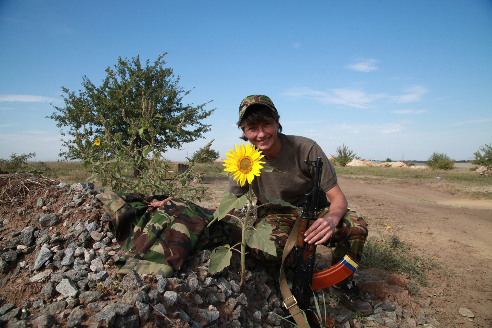
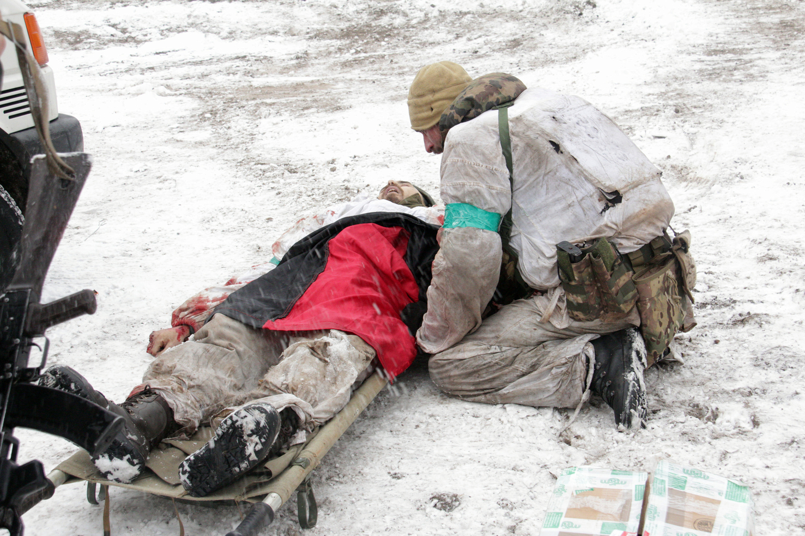

ВІРТУАЛЬНИЙ МУЗЕЙ
Фотографії:
Сергій Єрмаков

Перегляньте галерею і оберіть найцікавіший кадр.
02 — ВІДКРИЙТЕ КАМЕРУНаведіть камеру смартфона на фотографію.
03 — ПОБАЧТЕ ІСТОРІЮКоли зображення розпізнається, фотографія оживе — і ви побачите відео, пов'язане з цим моментом.

Кожен кадр зберігає лише одну мить. Але за нею завжди є рух, звук,
люди та події, які не потрапили в об'єктив.
Наведіть камеру смартфона на фотографію — і дозвольте їй ожити.



